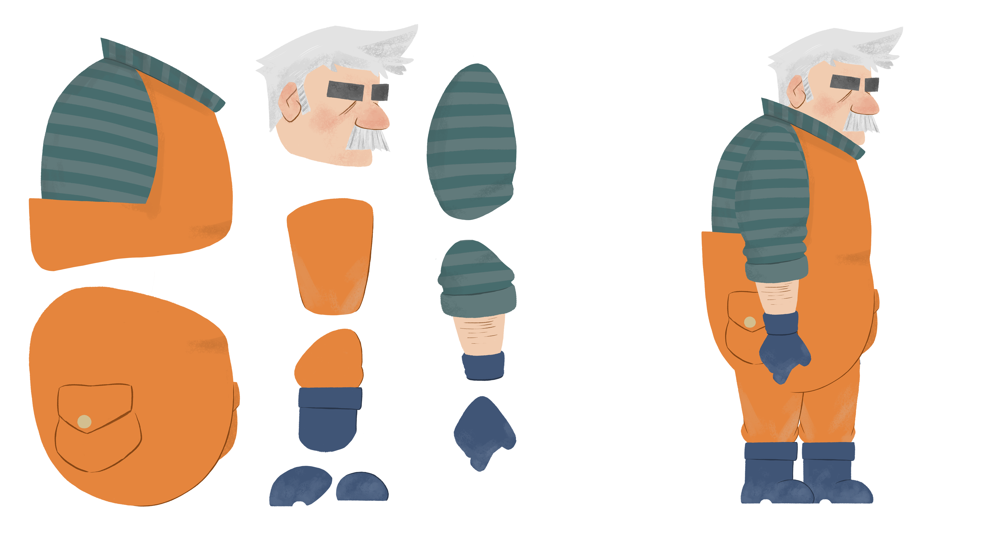
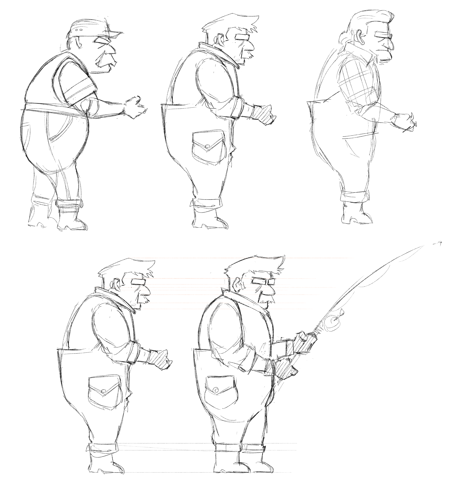
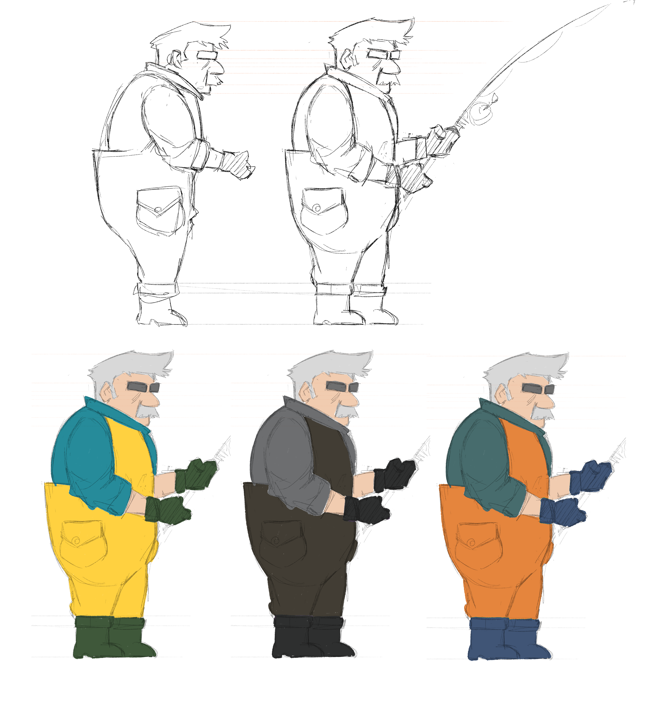
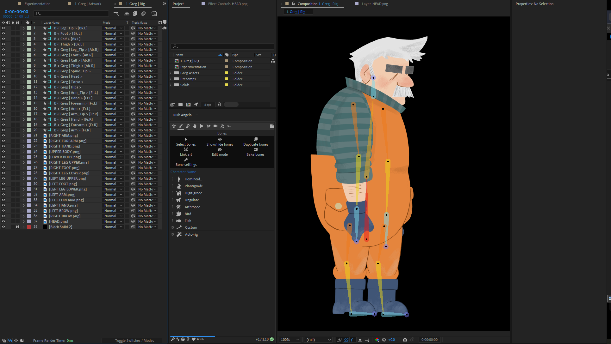
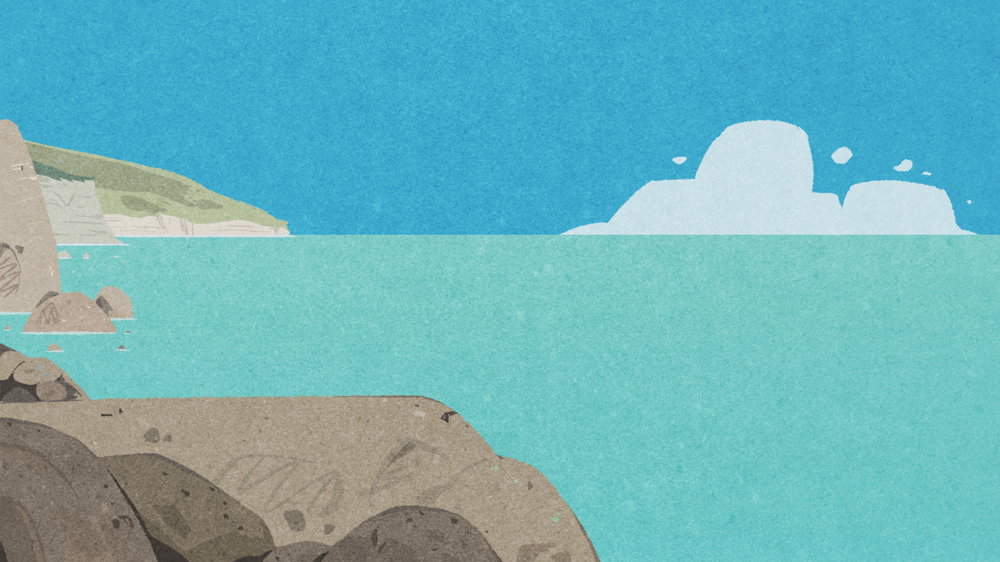
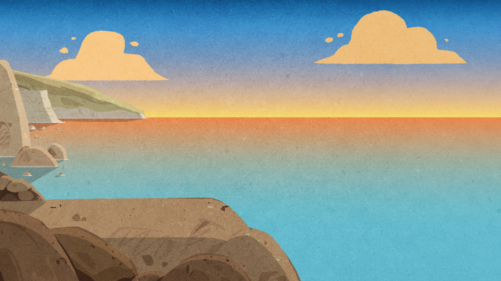
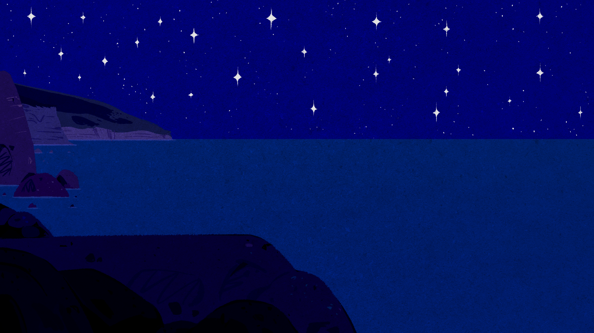
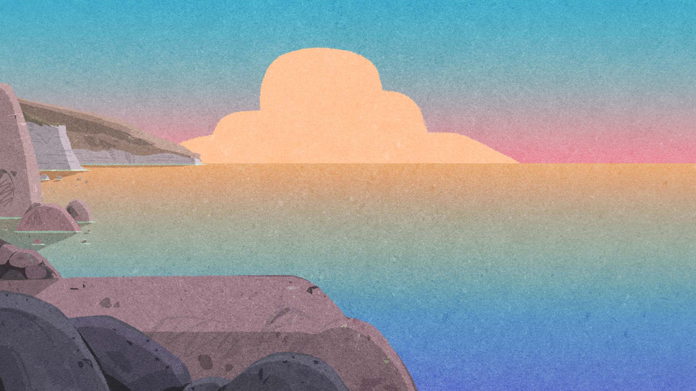

Fishin' Troubles
An experienced grumpy fisherman tries to catch some fish on a quiet sunny day.
What could go wrong?
With this project, I aim to explore the idea of a digital 2D cutout animation, mixing together the beauty and physicality of traditional paper cutout and the flexibility of digital 2D/3D environments.
All animation is made in After Effects, thanks to the plugin Duik Angela.


All the assets on the shot aim to resemble actual pieces of paper.
To enhance that feeling, I composed a series of paper-like textures to apply on top of the animation, looping in a small sequence.
The animation itself - fully made in AE - was tuned down to 12 fps in order to recall a stop-motion movement.
Finally, I applied a casted shadow to all the assets both in the background and in the character, to mimic a tangible physicality.







